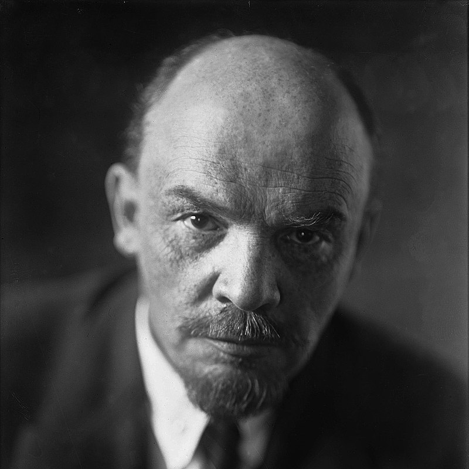

Vladimirs Uļjanovs (Ļeņins)
Vladimirs Uļjanovs, vairāk pazīstams kā Ļeņins, dzimis 1870. g. 22. aprīlī pēc jaunā stila Simbirskā, Krievijas Impērijā. Viens no marksisma teorijas attīstītājiem un pirmās proletāriskās valsts (Krievijas Padomju Federatīvā Sociālistiskā Republika) veidotājiem.
Ļeņina kopotie raksti (5. izdevums)
1. sējums
Priekšvārdi
Jaunas saimnieciskās kustības zemnieku dzīvē (Sakarā ar V. Postņikova grāmatu «Dienvidkrievijas zemnieku saimniecība»)
Sakarā ar tā saucamo jautājumu par tirgiem
Kas tie tādi «tautas draugi» un kā viņi karo pret sociāldemokrātiem? (Atbilde uz žurnāla Russkoje Bogatstvo rakstiem par marksistiem)
Narodņicisma ekonomiskais saturs un tā kritika Strūves kunga grāmatā (marksisma atspoguļojums buržuāziskajā literatūrā) (Par P. Strūves grāmatu «Kritiskās piezīmes jautājumā par Krievijas ekonomisko attīstību». S.-P. 1894. g.)
2. sējums
Priekšvārds
Frīdrihs Engelss
Likuma izskaidrošana par naudas sodiem, ko uzliek strādniekiem fabrikās un rūpnīcās
Ģimnāziju saimniecības un labošanas ģimnāzijas ("Russkoje Bogatstvo ")
Torontona fabrikas strādniekiem un strādniecēm
Par ko domā mūsu ministri?
Sociāldemokrātiskās partijas programmas projekts un izskaidrojums
Cara valdībai
Par ekonomiskā romantisma raksturojumu (Sismondi un mūsmāju sismondisti)
Jaunais fabriku likums
Sakarā ar kādu avīzes piezīmi
Krievijas sociāldemokrātu uzdevumi
Mājrūpniecības skaitīšana Permas guberņā 1894./95. gadā un "mājrūpniecības" vispārīgie jautājumi
Narodņiku fantastiskās projektēšanas pērles (S. Južakovs. Izglītības jautājumi. Publicistiski apcerējumi. - Viusskolas reforma. - Augstākas izglītības sistēmas un uzdevumi. - Ģimnāziju mācību grāmatas - Visas tautas izglītības jautājums. - Sieviete un izglītība. S.-Pēterburgā, 1897., VIII + 283 lpp. Cena 1 r. 50 k.)
No kāda mantojuma mēs atsakāmies?
Piezīmes